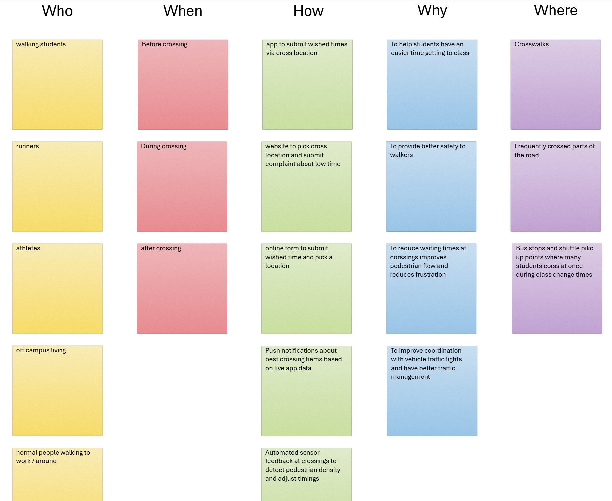
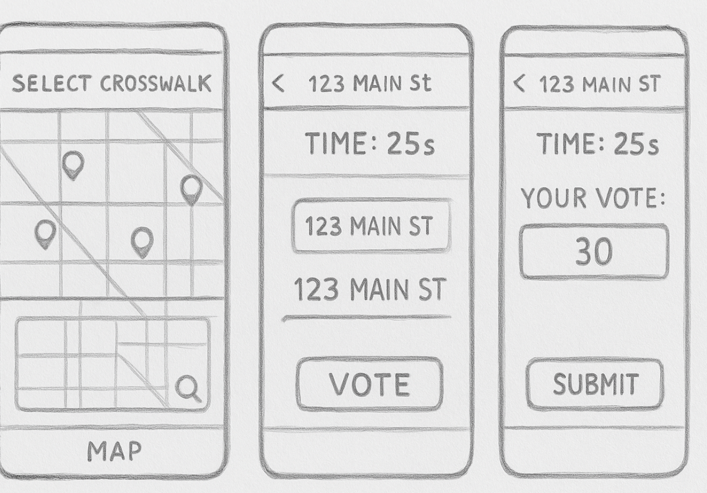
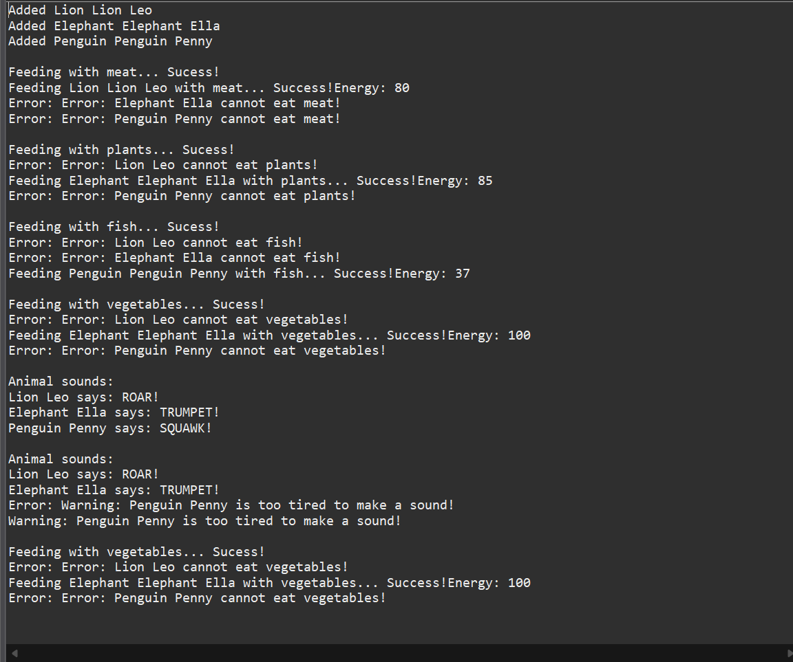

Highlighted projects
Problem Statement

The time given at cross walks are not adequate or long enough for their respective locations around the city to allow for safe crossing throughout the day.
Affinity Diagram
Our affinity diagram organizes the ideas about improving crosswalk safety and timing. It breaks the problem into five categories (Who, When, How, Why, and Where) to identify key users and their needs. It highlights walking students, runners, and off-campus residents who may often face timing and safety challenges at busy crossings. The solutions focus on a potential app and/or online tool that lets the users report or suggest better crossing times, with the goal of reducing wait times around campus, improving pedestrian safety, and coordinating with traffic signals.
Sketches
Three possible sketches/scenes displaying the interface of the app solution and how it would operate for users, going from screen to screen depending on interface and what's clicked.
Algorithmic Design Lab11 Project
Program that adds animals into hypothetical zoo habitat and illustrates their energy and status depending on what is fed.